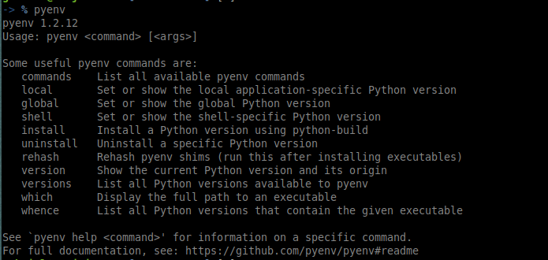

Instalando e utilizando o pyenv
Posted on Mon 09 March 2020 in blog
pyenv
Pyenv é um gerenciador criado para controlar múltiplas versões de python em um mesmo ambiente. O mesmo permite ter versões distintas sendo executadas, além de se combinar com a criação de ambientes virtuais.
Instalando o pyenv
Basta seguir as recomendações do repositório oficial: https://github.com/pyenv/pyenv#basic-github-checkout
Ou utilizar um script de instalação que auxila em algumas configurações: https://github.com/pyenv/pyenv-installer
#Executando pela instalação purta
$ curl https://pyenv.run | bash
ou
#Utilizando o script de instalação
$ curl -L https://github.com/pyenv/pyenv-installer/raw/master/bin/pyenv-installer | bash
É necessário modificar o arquivo de configuração de seu interpretador de comandas (.bashrc para o bash ou .zshrc para zsh/ohmyzsh) e adicionar os caminhos de path para o pyenv:
export PATH="$HOME/.pyenv/bin:$PATH"
eval "$(pyenv init -)"
#Aqui já ativando o virtualenv para funcionar nativamente
eval "$(pyenv virtualenv-init -)"
Abra um novo terminal (ou execute um source .bashrc por exemplo) e execute o comando para verificar a instalação:
$ pyenv
Deve retornar algo parecido dependendo da versão atual:

Utilizando o pyenv
Seguem alguns comandos e exemplos utéis para utilizar o pyenv.
pyenv version: exibe a versão\versões corrente do python sendo utilizadas;pyenv versions: lista todas versões de python instaladas;pyenv global: lista a versão\versões globais de python;pyenv global version1 <version2...versionN>: define quais as versões e ordem a serem definida como global;pyenv install <version>: instala uma versão de python
Exemplos
- Listar a versão corrente (
system):
$ pyenv versions
> system (set by /home/gabriel/.pyenv/version)
- Instalar a versão
python 3.5.7:
$ pyenv install 3.5.7
> Downloading Python-3.5.7.tar.xz...
> -> https://www.python.org/ftp/python/3.5.7/Python-3.5.7.tar.xz
> Installing Python-3.5.7...
> Installed Python-3.5.7 to /home/gabriel/.pyenv/versions/3.5.7
- Listar as versões instaladas (
systeme3.5.7):
$ pyenv versions
> * system (set by /home/gabriel/.pyenv/version)
> 3.5.7 (set by /home/gabriel/.pyenv/version)
O símbolo
*indica a versão definida como global, que pode também pode ser verificada com o comando:
$ pyenv global
> system
Isso indica que todos os comandos pythons (pip, pip3 python, python3, etc.) serão executados pela versão
system.
- Modificando a versão global para a versão
3.5.7e verificando a mesma:
$ pyenv global 3.5.7; pyenv versions
> system
> * 3.5.7 (set by /home/gabriel/.pyenv/version)
- Executando os comandos
python,python3epython3.5(irá executar a versão3.5.7):
$ python
> Python 3.5.7 (default, Jun 21 2019, 17:36:06)
> [GCC 7.4.0] on linux
> Type "help", "copyright", "credits" or "license" for more information.
> >>
> ...
$ python3
Python 3.5.7 (default, Jun 21 2019, 17:36:06)
[GCC 7.4.0] on linux
Type "help", "copyright", "credits" or "license" for more information.
> >>
> ...
$ python3.5
> Python 3.5.7 (default, Jun 21 2019, 17:36:06)
> [GCC 7.4.0] on linux
> Type "help", "copyright", "credits" or "license" for more information.
> >>
- Modificando a versão global para as duas (
3.57esystem) e resolvendo nessa ordem:
$ pyenv global 3.5.7 system; pyenv global
> 3.5.7
> system
- Executando o comando
pythonepython3.6epython2.7:
$ python
> Python 3.5.7 (default, Jun 21 2019, 17:36:06)
> [GCC 7.4.0] on linux
> Type "help", "copyright", "credits" or "license" for more information.
> >>
> ...
$ python3.6
> Python 3.6.8 (default, Jan 14 2019, 11:02:34)
> [GCC 8.0.1 20180414 (experimental) [trunk revision 259383]] on linux
> Type "help", "copyright", "credits" or "license" for more information.
>>>
> ...
$ python2.7
> Python 2.7.15+ (default, Nov 27 2018, 23:36:35)
> [GCC 7.3.0] on linux2
> Type "help", "copyright", "credits" or "license" for more information.
> >>>
A versão
3.5.7é reconhecida como inicial, resolvendo o comandopython, sendo o comandospython3.6epython2.7resolvidos pela versãosystem
- Invertendo as ordens das versões (
systeme depois3.5.7):
$ pyenv global system 3.5.7; pyenv global
> system
> 3.5.7
- Executando o comandos novamente
pythonepython3epython3.5:
$ python
> Python 2.7.15+ (default, Nov 27 2018, 23:36:35)
> [GCC 7.3.0] on linux2
> Type "help", "copyright", "credits" or "license" for more information.
> >>>
> (...)
$ python3
> Python 3.6.8 (default, Jan 14 2019, 11:02:34)
> [GCC 8.0.1 20180414 (experimental) [trunk revision 259383]] on linux
> Type "help", "copyright", "credits" or "license" for more information.
> >>>
> (...)
$ python3.5
> Python 3.5.7 (default, Jun 21 2019, 17:36:06)
> [GCC 7.4.0] on linux
> Type "help", "copyright", "credits" or "license" for more information.>
> >>>
A versão inicial (
system) resolve os comandospythonepython3, sendo que o comandopython3.5é resolvido pela versão também definida como global (3.5.7)
Portanto a ordem de versões para `pyenv global v1
Para mais detalhes, documentações e exemplos consulte o repositório oficial da ferramenta: https://github.com/pyenv/pyenv
Para Ler na sequência: Combinando o virtualenvwarpper com o pyenv